Mídias Sociais · Publicidade e Propaganda · UVV · 2026
Rádio Cidade97.7 FM
Brand persona, site e identidade visual de uma rádio que, além de tocar, conversa com quem ouve.
Toca aqui, toca na Cidade.
Antes, a rádiotocava.Faltava conversarcom quem ouve.
- EncostarEstar no trajeto, no fone e no feed de quem ouve, todo dia.
- EscutarSaber do que o público está falando antes de falar.
- InteragirResponder, perguntar e brincar junto, nas redes e no site.
- PertencerFazer quem ouve sentir que a rádio é da turma dele.
Uma marca queconversa precisade uma voz.
Brand persona é a personalidade da marca escrita como se fosse gente: como ela fala, o que ela escolhe dizer e como se comporta. É o que faz post, site, locução e evento soarem como a mesma rádio.
Voz
Fala como amiga, nunca como locutora formal. Coloquial, animada e direta.
Critério
Conta primeiro, mas confere antes. Fofoca, sim. Fake, nunca.
Presença
A mesma personalidade no Instagram, no site, no evento e na conversa com a IA.
Um sistemapra todo mundo.
A amiga que sabe primeiro
e confere antes de espalhar.
- Idade
- 20 anos
- Arquétipo
- A amiga antenada, com alma vintage
- O que ela ama
- Música pop, fofoca de internet, realities e moda. Mistura peça vintage com o que está em alta.
- Por que é da rádio
- Num feed infinito, ela escolhe uma voz real e ao vivo. Valoriza o autêntico e influencia as amigas.
Prazer, Cida. A Rádio Cidade em forma de gente, em 3D. Arraste para girar.
Cada detalheé marca.
Seis humores,sete bocas.
As bocas acompanham a voz dela, sílaba por sílaba. Os humores mudam conforme o assunto da conversa.
E ela temendereço:o site.
- Rádio ao vivo em um toque
- Notícias em mosaico
- Babados do Instagram
- A Cida como IA da rádio
Ela conversade verdade.
A Cida virou a IA da rádio: responde por texto ou por voz, com a personalidade dela e as regras da marca.
- CérebroGemini com a personalidade da Cida
- VozVoz sintetizada, com tom que muda pelo humor
- OuvidoMicrofone com transcrição em português
- Regra de ouroFofoca, sim. Fake, nunca.
Buyer persona · 1 de 3
Buyerpersona.
- Mariana
- Marcelo
- Beatriz
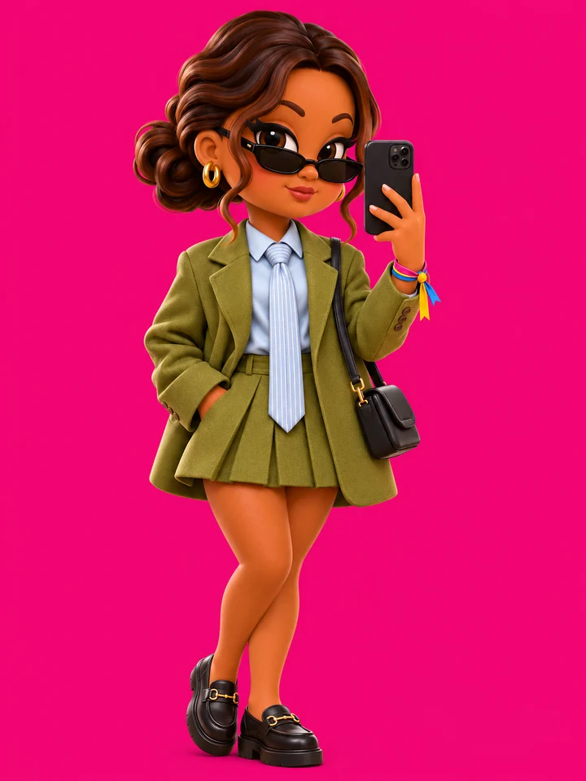
Mariana 27
Trabalha, tem rotina corrida e vive nas redes. No fim de semana, sai com os amigos.
match!Mariana × Rádio Cidade
Mora na Grande Vitória, acompanha tendências e aproveita o lazer sem pesar no orçamento.
Arraste o card ou toque no coraçãoMariana, 27. Sobre ela.
com a Cidade0%
- 27 anosIdade
- Classe B/CRenda pessoal de R$ 2.500 a R$ 5.000
- Vila Velha · ESOnde mora
PerfilMariana mora na Grande Vitória, trabalha, tem uma rotina movimentada e utiliza as redes sociais diariamente. Gosta de música, acompanha tendências, sai com amigos nos finais de semana e procura aproveitar oportunidades de lazer sem comprometer muito o orçamento.
- Interesses
- Música pop, funk, sertanejo e hits nacionais.
- Moda, beleza e autocuidado.
- Restaurantes, delivery, passeios e festas.
- Fofoca, memes, influenciadores e tendências.
- Promoções, ofertas de ingressos e novidades.
- Hábitos de mídia
- Utiliza Instagram e TikTok para entretenimento, WhatsApp para comunicação e plataformas de streaming para ouvir música. O rádio aparece como companhia durante deslocamentos e atividades cotidianas.
- O que espera de uma marca
- Mariana valoriza marcas próximas, divertidas e que transmitam identificação. Espera uma comunicação leve, atual e acessível, que acompanhe seus interesses e ofereça experiências relevantes. Gosta de marcas que interagem com o público, apresentam novidades, realizam promoções e conseguem fazer parte de sua rotina sem parecerem artificiais.
Análise de público-alvo · Rádio Cidade 97.7 FM
Buyer persona · 2 de 3
Buyerpersona.
- Mariana
- Marcelo
- Beatriz
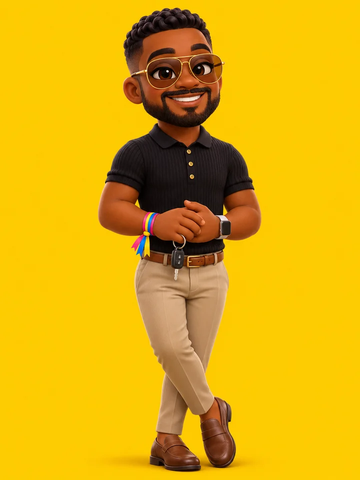
Marcelo 38
Motorista de aplicativo. Passa o dia rodando a Grande Vitória com o rádio ligado.
match!Marcelo × Rádio Cidade
Trabalhador e comunicativo, quer entretenimento que deixe as horas no volante mais leves.
Arraste o card ou toque no coraçãoMarcelo, 38. Sobre ele.
com a Cidade0%
- 38 anosIdade
- Classe B/CMotorista de aplicativo
- Vila Velha · ESOnde mora
PerfilMarcelo é um homem trabalhador, comunicativo e que passa boa parte do dia circulando pela Grande Vitória. Como trabalha muitas horas dirigindo, valoriza formas de entretenimento que tornem sua rotina mais leve. Gosta de estar informado sobre o que acontece na cidade e procura aproveitar os momentos livres com a família e os amigos.
- Interesses
- Música popular.
- Futebol.
- Notícias locais.
- Humor.
- Acontecimentos da Grande Vitória.
- Hábitos de mídia
- Escuta rádio diariamente durante o trabalho e os deslocamentos. Utiliza o WhatsApp para conversar com passageiros, amigos e familiares e acessa o Instagram nos intervalos. Prefere conteúdos rápidos, informações práticas e programações que não exijam atenção visual.
- O que espera de uma marca
- Marcelo valoriza marcas próximas, confiáveis e que façam parte de sua rotina. Espera uma comunicação simples, direta e verdadeira, que ofereça entretenimento, informação e vantagens reais, como promoções e oportunidades de participação. Gosta de marcas que demonstram conhecer a realidade do público e não parecem distantes de seu cotidiano.
Análise de público-alvo · Rádio Cidade 97.7 FM
Buyer persona · 3 de 3
Buyerpersona.
- Mariana
- Marcelo
- Beatriz
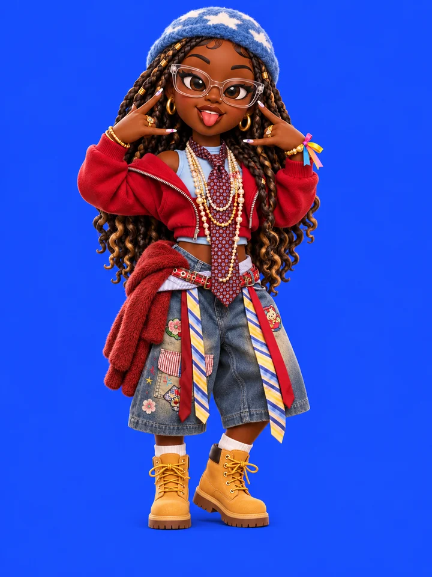
Beatriz 20
Universitária na UVV e estagiária. Vive a cultura pop e tem opinião sobre tudo.
match!Beatriz × Rádio Cidade
Antenada e criativa, acompanha cada lançamento e participa das conversas da internet.
Arraste o card ou toque no coraçãoBeatriz, 20. Sobre ela.
com a Cidade0%
- 20 anosIdade
- Classe B/CUniversitária na UVV e estagiária
- Vila Velha · ESOnde mora
PerfilBeatriz é uma jovem universitária antenada, criativa e muito conectada ao universo da cultura pop. Gosta de acompanhar artistas, lançamentos musicais, premiações e acontecimentos envolvendo celebridades. Costuma compartilhar opiniões e participar de conversas sobre os assuntos que estão repercutindo na internet.
- Interesses
- Cultura pop internacional: Taylor Swift, Lana Del Rey, Olivia Rodrigo, Sabrina Carpenter e outros.
- Cinema, séries, moda e premiações musicais.
- Festivais e novidades do entretenimento.
- Hábitos de mídia
- Utiliza principalmente Instagram, TikTok, X e Spotify. Acompanha perfis de notícias sobre celebridades, páginas de fãs, criadores de conteúdo e veículos de entretenimento. Descobre músicas por vídeos virais, playlists e lançamentos, além de consumir entrevistas, clipes e conteúdos sobre seus artistas favoritos.
- O que espera de uma marca
- Beatriz valoriza marcas autênticas, criativas e atualizadas, que tenham personalidade e saibam conversar sobre assuntos relevantes para seu público. Espera conteúdos interessantes, com identidade visual bem construída e linguagem natural, sem parecerem forçados ou ultrapassados. Também gosta de marcas que interagem com seus seguidores, acompanham tendências e demonstram conhecer o universo cultural de seus consumidores.
Análise de público-alvo · Rádio Cidade 97.7 FM
Três editorias,nove conteúdos.
No Radar
O que pode virar assunto em breve: pistas, possíveis shows e anúncios, sempre como possibilidade.
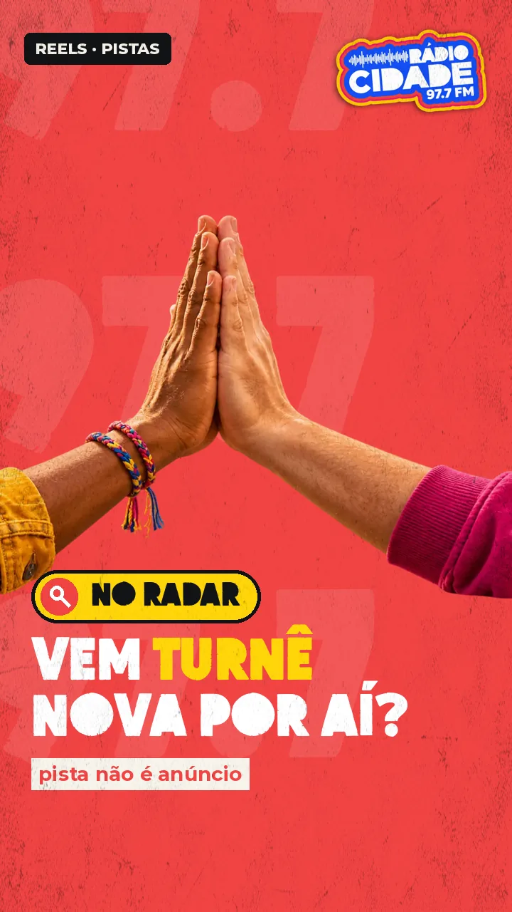

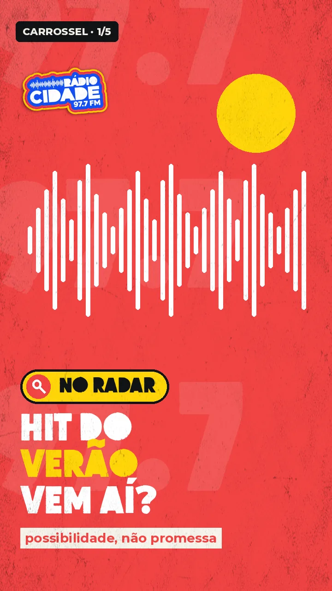
Lançamento
O que acabou de chegar e merece play: singles, clipes e feats com a curadoria da rádio.
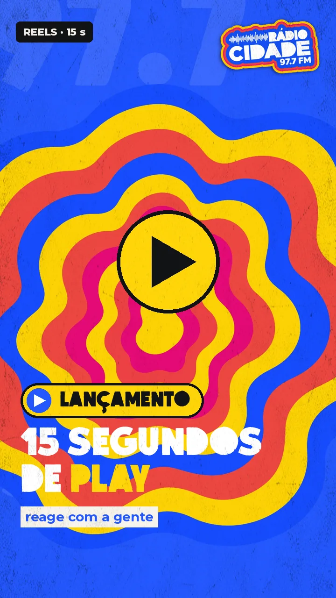
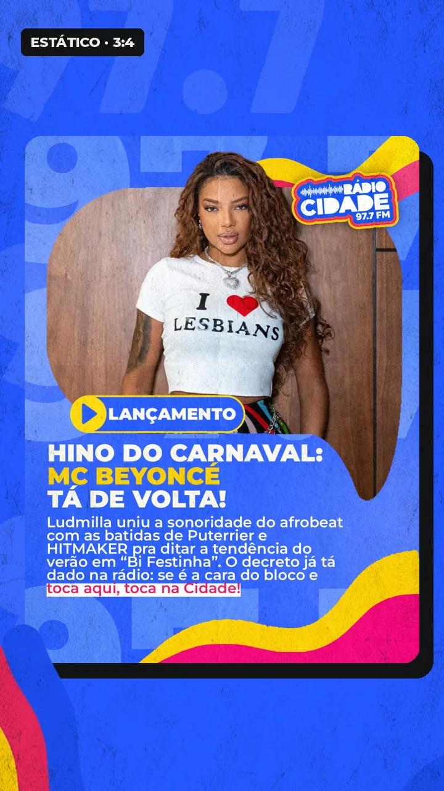
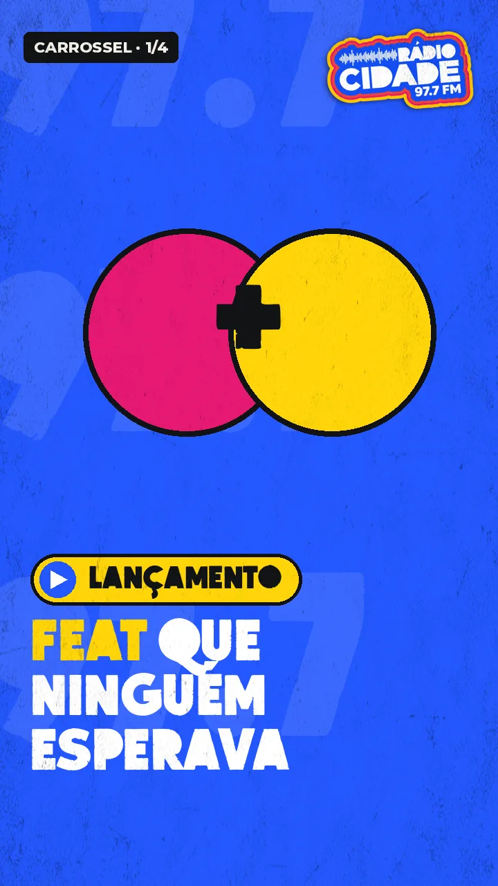
Fofoca
Sobre o que todo mundo está falando, sempre com selo: confirmado, declaração ou rumor.


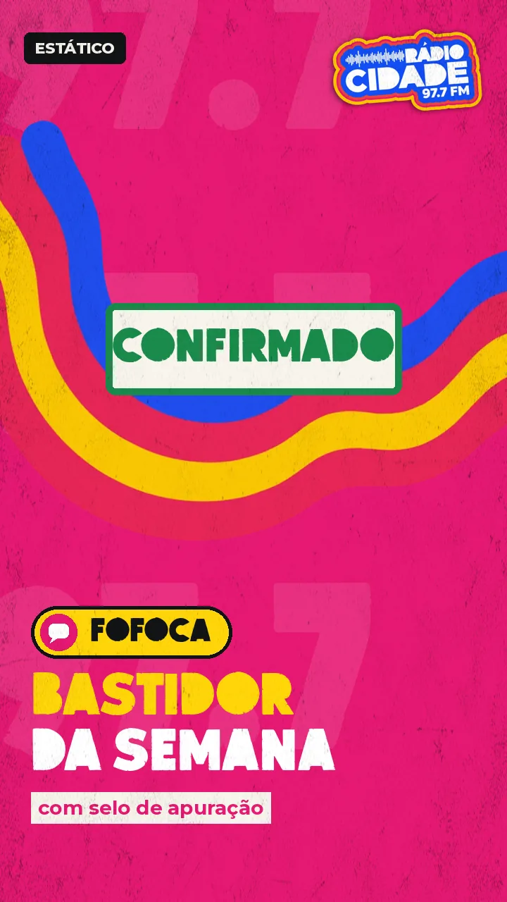
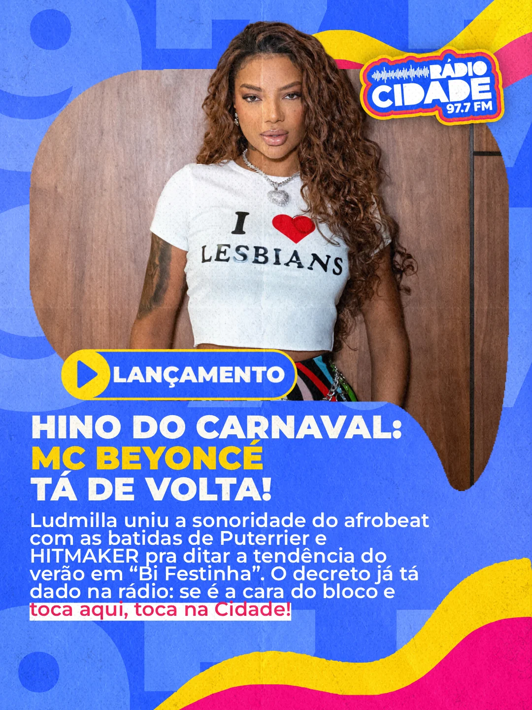


Arte +legenda.
A Ludmilla voltou pro bloco 🔥 O som novo junta afrobeat com a batida de baile e já chega com cara de verão.
Na Cidade já tá no play. Se é hit de carnaval, você ouviu aqui primeiro. Toca aqui, toca na Cidade!
Já ouviu? Dá a nota de 0 a 97,7 nos comentários 👇
#RádioCidade #Lançamento #Ludmilla #PopNacional
STATUS: a confirmar. O feed da Marina amanheceu com menos gente: fãs notaram unfollows em perfis de amigas antigas.
O que se sabe até agora: fato apurado e fonte. O que ainda é especulação: o resto. Quando tiver novidade oficial, você fica sabendo aqui.
E aí, de que lado você está nessa? 💬
#RádioCidade #Fofoca #CulturaPop
🔎 ARMY, segura o coração: tem gente do mercado apostando que a próxima turnê do BTS pode incluir mais datas na América Latina.
Por enquanto é pista, não é anúncio: nada foi confirmado pela HYBE. A Cidade está de olho e conta assim que for oficial.
Se rolar, você vai? Responde com 💜 ou 😭
#RádioCidade #NoRadar #BTS #KPop
Três semanasno ar.
A Cidade sai do rádio.
Não é editoria: é a marca fora da tela, nos lugares onde o ouvinte já está.
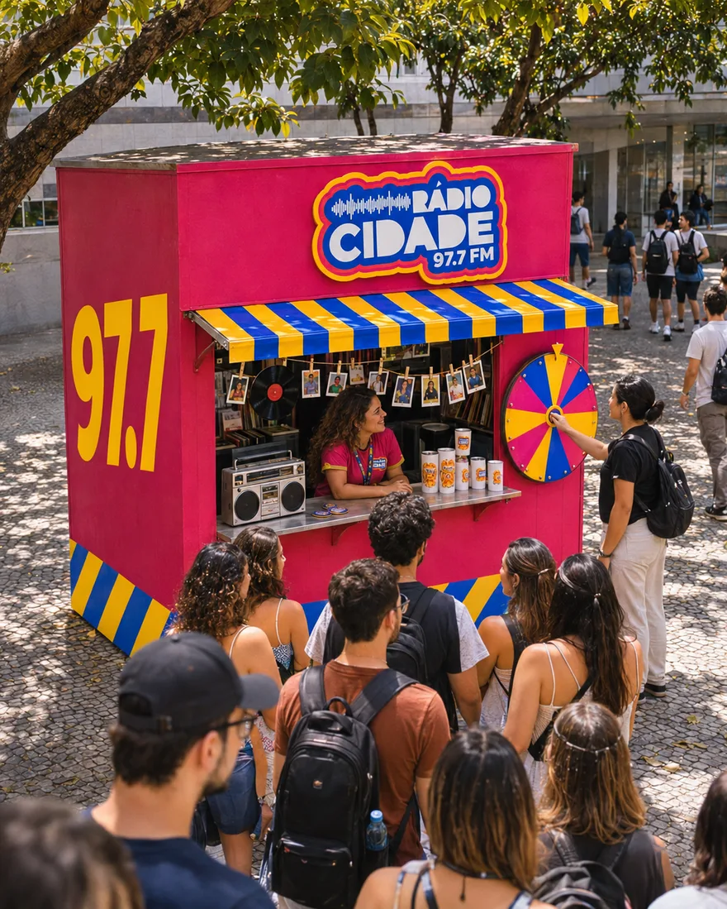
Pra levar
Bolsa de crochê, sacola de feira, copo americano, caneca de ágata, boné, viseira e radinho de pilha. Brinde que faz parte da rotina, não da gaveta.
Na rua
Banca de jornal e carrinho de picolé nas cores da Cidade, rodando pelo calçadão.
Pra vestir
Camisa de várzea “Cidade FC” pro público e camiseta minimalista pra equipe.
Símbolo
A pulseira trançada das mãos do key visual, distribuída no estande.
Tocaaqui.
A Cidade está no ar. Agora é com vocês.
Rádio Cidade 97.7 FM · projeto acadêmico de Publicidade e Propaganda, UVV, 2026. A Cida é uma personagem 3D criada com IA; persona, pautas e datas são propostas do grupo.
 Fala com a Cida
Fala com a Cida
 Cida em RA
Cida em RA